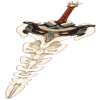
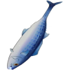
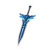
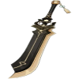

|  |
Espinha Dorsal da Serpente |
42.4 |
510 |
Bonus CritRate% |
6.0% |
27.56% |
Quando o jogador está em combate, a cada 4s aumenta o dano causado em 6-10% e 3-2% do Dano recebido. Este efeito pode ser acumulado até 5 vezes, não sendo redefinido após o personagem sair de campo, mas reduzirá 1 camada do efeito quando o personagem receber Dano. |
|  |
Lorde do Mar Luxuoso |
41.07 |
454.36 |
Bonus Atk% |
12.0% |
55.13% |
Aumenta o Dano do Supremo em 12-24%. Quando o Supremo acerta os oponentes, existe 100-200% de chance de invocar uma tuna titânica que avança e causa 100% do ATQ como Dano em uma AdE. Este efeito pode ocorrer uma vez a cada 15s. |
|  |
Estrela de Prata Enterrada na Neve |
43.73 |
564.78 |
Bonus Phys% |
7.51% |
34.49% |
Atingir um inimigo com um Ataque Normal e Ataque Carregado possui uma chance de 60% de formar e dropar um Núcleo de Cristal Eterno sobre eles, causando 80-140% de Dano de ATQ em uma AdE. Inimigos afetados por Cryo recebem 200-360% de Dano de ATQ. Pode ocorrer apenas uma vez a cada 10s. |
|  |
Protótipo Arcaico |
43.73 |
564.78 |
Bonus Atk% |
6,0% |
27.56% |
Ao acertar um Ataque Normal ou um Ataque Carregado, possui 50% de chance de causar 240-480% de Dano de ATQ adicional em uma área pequena. Este efeito pode ser ativado uma vez a cada 15s. |